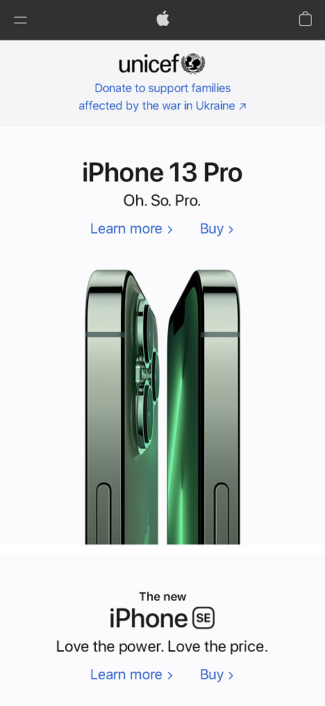
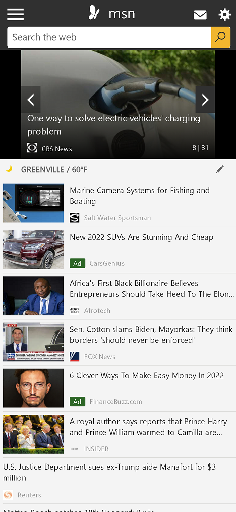

Design Principles Document
David F
Visual Hierarchy
Apple
https://www.apple.com
On this website the Visual Hierarchy principle can be noticed on multiple elements.
First, the navigation uses contrasting colors that make the few elements there outstand.
Second, the text on the page the principle is also applied by making text larger and bold in weight for headings, the name of the product always outstands.
Hick's Law
eBay
https://www.ebay.com/
The mobile version of eBay website is a good example of Hick's Law applied because with the number of links and navigation options available.
On the homepage we can find a limited number of promoted items, categories, and other links; even the navigation menu has fewer options. This reduced number of links makes easier for a user to choose which link to tap.
PARC: Alignment
MSN
https://www.msn.com
In the MSN website we can see some examples of the alignment principle, the list of articles and their pictures are left aligned.
Like some articles mention, for English (and other languages), where we read from left to right, aligning text to the left makes the reading of those headings and scrolling through them easier for the user.
The alignment of the content of the page also makes it look organized, neat, and uniform.